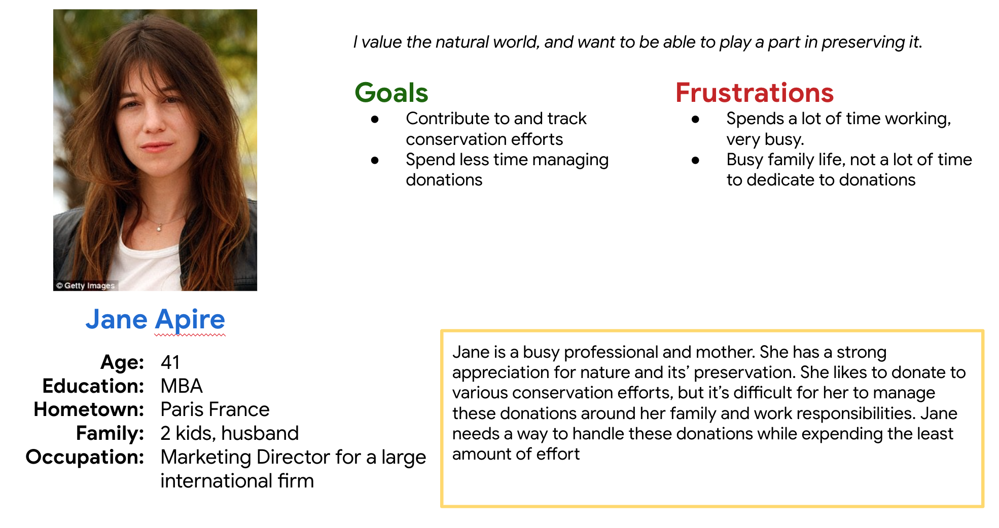

Protect a Panther
Roles
Lead UX Designer , Researcher
Project Goals
Increase donations to conservation charity by creating a more convenient means of solicitation and donation.
Target Audience
Environmentally conscious individuals who need an easy way to protect at risk panther populations.
Constraints & Challenges
Creating a simple and intuitive donation system, while maintaining accessability.
Research Study Details
User research revealed 2 main pain points in running an art auction:
- Remembering
:
Participants expressed frustration at having to remember if they had made a donation, and the details as to that donation. - Record Keeping
:
Additionally, the participants expressed a need to easily access records of their donations for administrative and reference purposes.
User Persona
Initial Designs

Initial desing concepts
Digital wireframes
Low-fidelity prototype
User Testing Results
We performed two rounds of remote, supervised usability testing, which garnered the following findings:
Round 1 findings
- Users found the main flow to be easy to navigate.
Round 2 findings
- Users wanted to be able to learn more about specific animals and sponsor them.
High-Fidelity Designs
Our usability studies provided us with the design direction needed to bring the design into a final
high-fidelity design.
Conclusion & Next Steps
1. Refine the design. Further define the brand personality.
2. User dashboard. Design the user dashboard for tracking donations and managing tax documents.
3. Refine animations and transitions.